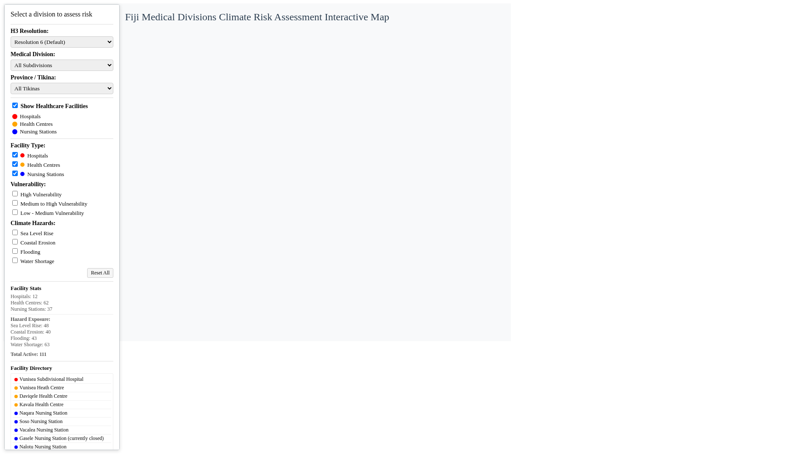

UTRA Summer 2026 › UTRA Project Demo
1 / 10
Spatially-Aware Climate Risk Visualization & Decision-Support Chatbot for PICTs
UTRA Summer Research Project — Brown EarthLab
Presenter & Contributor
Gregory Lazatin
Data Exploration Engine, Bivariate Mapping & Backend Services
Research Partner
Yigit Efe Enhos
Conversational UI/UX Design & Geospatial Python Tool Suite
Research Proposal Abstract
"Develop a data exploration interface to visualize uncertainty in climate projections, and generate a spatially-aware chatbot for non-expert decision makers in Pacific Island Countries and Territories (PICTs)."
Brown University — EarthLab
PICT Climate Risk Platform
July 2026
Background › Climate Vulnerability & GCM Gaps
2 / 10
1. Problem Statement: PICT Climate Risk & Uncertainty
Motivation
Vulnerability of Pacific Small Islands
PICTs are on the frontline of global climate impacts, facing severe ocean warming, extreme heat stress, and coastal inundation.
Source: IPCC WGII AR6 Report, Ch. 15 (Small Islands) — Mycoo, Wairiu et al., 2022 (doi:10.1017/9781009325844.017).
Coarse Global Climate Models (GCMs)
Standard CMIP6 ensemble models underrepresent small island geographies. Key fine-scale drivers such as Tropical Cyclones (TCs) and localized storm surge are not directly simulated, creating high model output uncertainty.
Decision-Making Gaps
- Multidimensional Uncertainty: Decision makers often receive simple model averages without confidence bounds or spatial variance metrics.
- Data Inaccessibility: Large NetCDF and raster datasets require specialized GIS expertise to extract actionable insights.
- Platform Goal: Deliver a dual-interface platform (Bivariate Exploration Map + AI Chatbot) to communicate geographic insights alongside uncertainty bounds.
UTRA Project — Section 1
Problem Formulation
Slide 2
Architecture › System Platform Overview
3 / 10
2. Dual Platform System Architecture & Motivation
System Design
Module 1: earthlab-fiji-map (Experimental Testbed)
Side-Project & Analytical Sandbox
- Role & Motivation: Serves as an isolated experimental testbed to prototype, benchmark, and optimize high-performance spatial analysis algorithms and 2D bivariate map overlays before full chatbot integration.
- Core Deliverables: 3×3 Bivariate matrix, GPU trace reduction (1,137 → 3 layers), dynamic H3 polyfilling (<2s build cache), and 111 CHVA facility spatial joins.
Module 2: pict-climate-risk-viz-chatbot (Main Platform)
Primary End-User Decision-Support System
- Role & Motivation: The core target application designed for non-expert decision makers to interact with climate data via natural language.
- Core Deliverables: Minimalist conversational UI, 13 Python geospatial analytical tools, interactive MapCanvas, zonal stats drawer, and live SDMX data services.
UTRA Project — Section 2
System Architecture
Slide 3
Module 1 › Bivariate Map & GPU Optimization
4 / 10
3. Fiji Interactive Bivariate Map (earthlab-fiji-map)
Data Viz

Interactive Fiji Map Dashboard
fiji_optimized.html
3×3 Bivariate Classification Formula
Combines projected temperature mean \(\text{raster\_mean}\) with model uncertainty \(\sigma\) into a 9-class color index:
$$\text{Class} = \text{Bin}_{\text{temp}} + 3 \times \text{Bin}_{\text{uncertainty}}$$
where \(\text{Bin}_{\text{temp}}, \text{Bin}_{\text{uncertainty}} \in \{0, 1, 2\}\) based on tercile distribution bounds.
GPU Trace Rendering Optimization
Reduced Mapbox trace overhead from 1,137 separate traces down to 3 static GPU layers (\(\text{Choroplethmapbox}\)), completely resolving browser interaction freezes.
UTRA Project — Section 3
Fiji Bivariate Map
Slide 4
Module 1 › CHVA Healthcare Layer & H3 Gridding
5 / 10
4. CHVA Healthcare Facility Layer & H3 Polyfilling
Spatial Join
111 CHVA Healthcare Facility Dataset
- Dataset Definition: Fiji Climate Change & Health Vulnerability Assessment (CHVA) dataset containing 111 mapped healthcare infrastructure points categorized by tier: Hospitals (Red), Health Centres (Orange), and Nursing Stations (Blue).
- Spatial Join: Performed spatial overlay (\(\text{gpd.sjoin}\)) linking facility GPS coordinates to administrative subdivision polygons.
- [Note: Insert screenshot of all 111 loaded facility locations here]
Dynamic H3 Polyfilling & Geometric Cache
- Multi-resolution Uber H3 hexagonal spatial binning (Resolutions 5, 6, 7).
- Built geometric caching layer (\(\text{data/cache/}\)), cutting pipeline build time from ~30s down to <2s.
- Truncated GeoJSON coordinates to 6 decimal places (~10 cm precision) for fast network transmission.
UTRA Project — Section 4
CHVA & H3 Indexing
Slide 5
Module 2 › Conversational Chatbot UI
6 / 10
5. Spatially-Aware Decision Chatbot Interface
Chatbot UI

Climate Risk A.I. Frontend Prototype
Port 5173
Minimalist Environmental Aesthetic
Designed by partner Efe using soft sand tones (\(\#\text{f4f1eb}\)) tailored for non-expert decision makers reviewing environmental reports.
Guided Starter Prompt Cards
Onboards non-expert users with high-yield starter queries ("Explore climate risk in Fiji", "Explain projection uncertainty", "Compare wet-bulb trends").
[Note: Replace screenshot above with updated high-resolution chatbot layout screenshot]
UTRA Project — Section 5
Chatbot UI
Slide 6
Module 2 › Spatial Selection & SDMX Ingestion
7 / 10
6. Spatial Query Engine & SDMX Live Backend
Backend Service
Interactive MapCanvas & Draw Controls
- Mapbox GL JS map canvas featuring thin boundary outlines, tooltips, and dynamic legends.
- Interactive bounding box and polygon drawing controls (\(\text{DrawControls.tsx}\)).
- Real-time zonal statistics computation over custom drawn polygons.
- [Note: Add dynamic GIF/animation showing polygon drawing & zonal stats calculation flow]
Live SDMX Data API & H3 Binner
- \(\text{sdmxApiClient.js}\): Ingests live SDMX regional climate metrics directly from international statistical endpoints.
- \(\text{h3Binner.js}\): Aggregates live climate indicators into H3 spatial cells on the fly.
- \(\text{cacheManager.js}\): Manages backend spatial query caching.
UTRA Project — Section 6
Spatial Engine
Slide 7
Module 2 › 13 Python Geospatial Tools
8 / 10
7. 13-Tool Python Analytical Geospatial Engine
Tool Suite
| Category | Python Tool Modules | Analytical Function |
|---|---|---|
| Spatial & Region | spatial.py, region.py |
PICT region lookup, administrative boundary filtering |
| Climate Extremes | climate.py, extremes.py, thresholds.py |
Anomaly calculation, extreme heat days, threshold exceedances |
| Aggregation & Trends | statistics.py, aggregation.py, temporal.py |
Spatial/temporal aggregation, variance, trend lines |
| Risk & Vulnerability | exposure.py, assets.py, ranking.py, asset_ranking.py |
Asset exposure calculation, infrastructure vulnerability ranking |
LLM Function Calling
Enables the LLM to programmatically route natural language prompts (e.g., "Find vulnerable hospitals in Fiji exposed to extreme heat") directly to Python spatial operations.
UTRA Project — Section 7
Geospatial Tools
Slide 8
Roadmap › Remaining Proposal Features
9 / 10
8. Remaining Features to Complete Proposal
Future Work
Priority 0: Immediate Implementation
- Full LLM Tool Execution Loop: Connect Express server to Python tool scripts via formal JSON Schemas.
- Dynamic Recharts Trend Lines: Embed probability distributions & 2050/2100 trend charts in sidebar.
Priority 1: High Impact Data Layers
- True CMIP6 Model Variance: Replace mock alpha with real spatial standard deviation (\(\text{raster\_std}\)).
- Tropical Cyclone Hazard Datasets: Ingest TC track hazard maps & storm surge inundation proxies.
Priority 2 & 3: Platform Enhancements
- RAG System: Vector-index IPCC regional reports & SPREP briefings in ChromaDB/pgvector.
- Low-Bandwidth Dashboard: Load Plotly via CDN to shrink \(\text{fiji\_optimized.html}\) from 18 MB to <500 KB.
- React Flow Node Graph: Render visual execution graph of LLM spatial reasoning.
UTRA Project — Section 8
Roadmap
Slide 9
Conclusion › Summary & Q&A
10 / 10
9. Summary & Acknowledgments
Conclusion
Summary of Key Deliverables
- Successfully created an interactive 2D Bivariate Uncertainty Map for Fiji with 3 GPU layer optimization.
- Built a warm minimalist AI chatbot UI with 13 analytical geospatial Python tool wrappers.
- Integrated SDMX live data ingestion, H3 hexagonal spatial binning, and spatial query panels.
- Established comprehensive E2E Playwright test automation across both codebases.
Questions & Discussion
Thank you for your time!
Open for Questions, Comments, and Discussion
Brown University EarthLab — UTRA Summer 2026
UTRA Project — Conclusion
Final Slide
Slide 10